2019年度のまとめ（2020/03/31）
あっという間に助教の2年目が終わりました．新型肺炎による未曾有の危機が世を騒がせている今日このごろですが，みなさまいかがお過ごしでしょうか．
今年も形式的に1年のまとめなどを書き連ねておきます．
研究業績 （2019/04～2020/03 のもの）
芸術科学会論文誌に採択（筆頭）
UIST2019にPaper採択（筆頭）
投稿中の論文はありませんが，微調整と英文校正で論文誌に投稿できるかな程度の原稿と，とある国際会議に向けた研究を推進中です．
芸術科学会の論文は昨年度末に投稿していたものですので，今年度の成果に連ねるのは良心の呵責を感じるのですが，かといってUISTのPaperだけになってしまうのも怯懦心が震える思いです．
実は春～夏にかけてモリモリと研究プロジェクトを進めていたのですが，こちらは成果実らずといった始末でして．共著者が別の方向性で展開させてみたいとのことですので，いましばらく水やりが必要かもしれません．
そういうわけで，来年度も引き続き研究活動に励んで参ります．筆頭でやりたいことをやっていくつもりですが，共同研究はいつでも歓迎しております．
その他の活動
副業でいろいろと実装のお手伝い
グラスゴー（CHI2019）とニューオーリンズ（UIST2019）行った
はこだて未来大学で講演
あとは担当の授業などをこなしながら
自宅から出ることすら億劫な自分が年2回も海外にでるのは珍しいことです．おかげで研究予算の逼迫が極まり，かなり自腹を切りました．そういう研究者になってはいけないと思うのですが，自分で負担してやりたいことやってるので文句を言われる筋合いないのでは，などとも思います．ひねくれています．
雑記
日々いろいろなことをやっているのですが，ほぼやった時点で満足してしまって発信できていないです．その一部を吐き出しておきます．
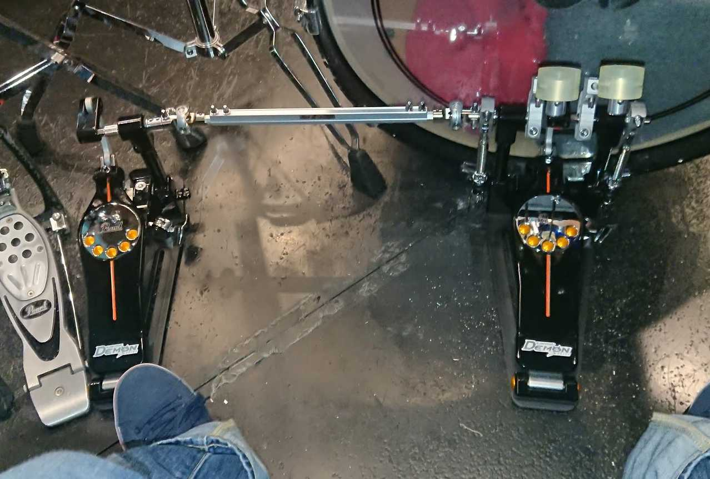
ペダルとビーターを買った
PearlのDemon Driveです．ロマンの塊，ダイレクトドライブなのですが，足に馴染むまでかなり時間がかかりました（昔ほど練習時間がとれていないのもありますが）．ビーターはご存知KitanoからF3500．たまらんぐらいアタックが出ます．そろそろスネアが欲しいな，と思っています．練習．
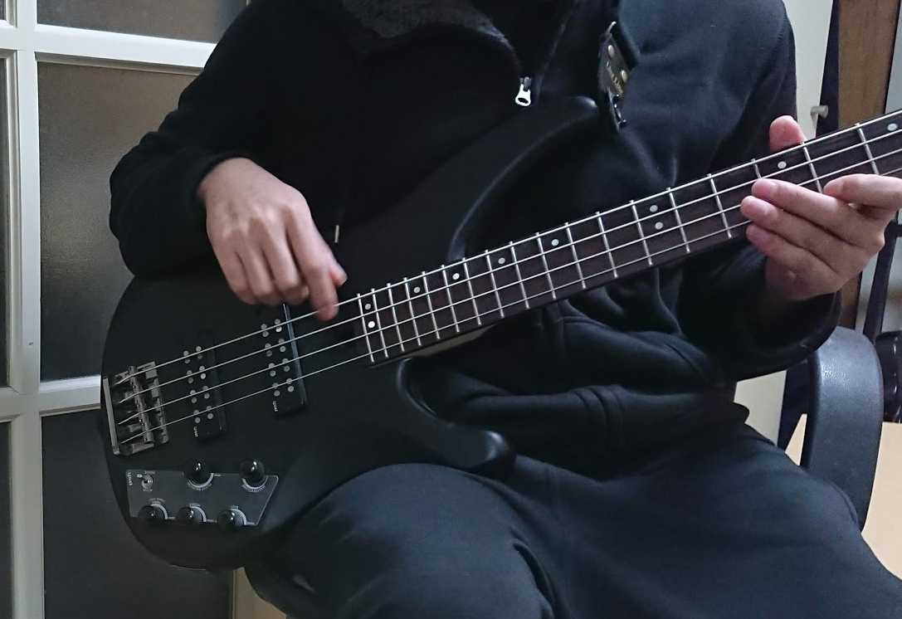
ベースを買った
YAMAHA TRBX504です．たぶん割とスタンダードな1本．アクティブもパッシブも弾いてみたかったのでこのモデルです．
指弾きで練習していますが，リズムキープがとても大変です．指が弦に触れた瞬間ではなく，弦を弾ききったときに鳴るようなイメージで弾かないと，どうしてもワンテンポ遅れます．練習．
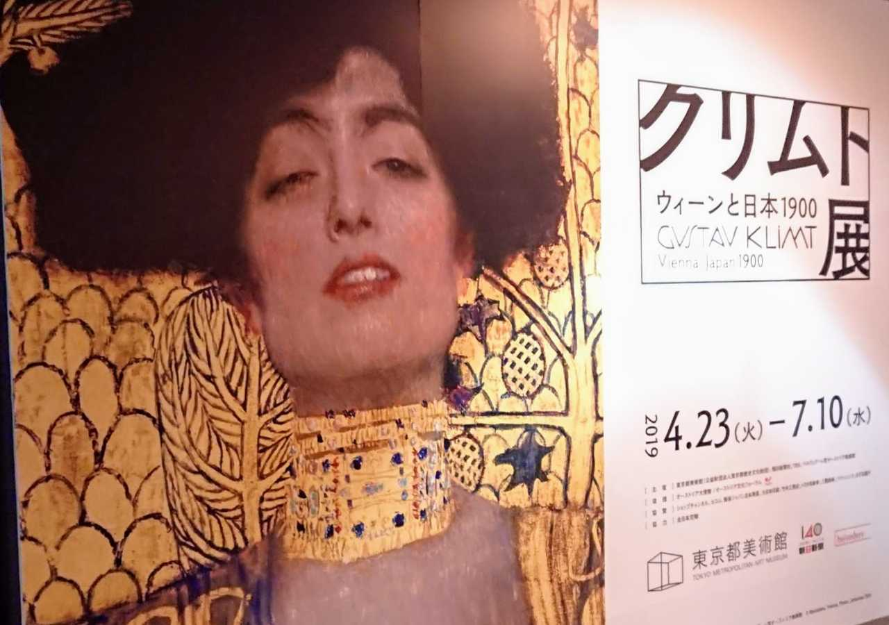
クリムト展
東京都美術館で企画された「クリムト展」に行きました．エルフェンリートのOP映像から知ったクチなので，まずまずのにわかですが『ユディトⅠ』や『女の三世代』，『ベートーヴェン・フリーズ』を拝見できて非常に満足．あとはオーストリアのベルヴェデーレ宮殿ですね．
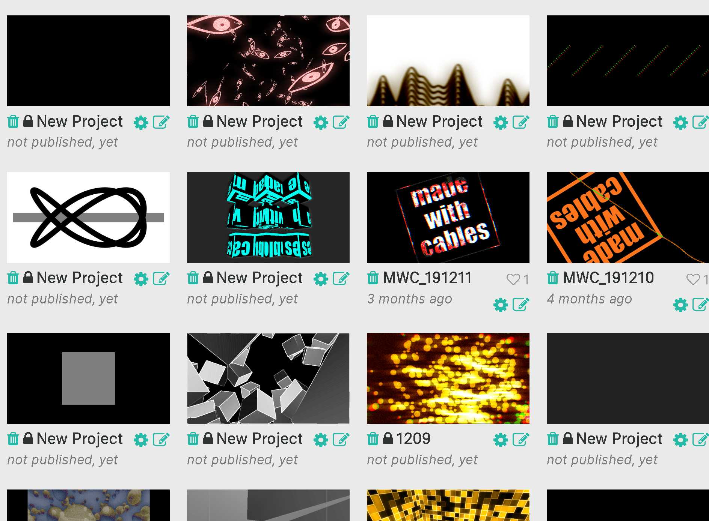
Cables
Cables.glというWebGLベースのビジュアル言語で遊んでました．未公開の作品が多いですが，JavaScriptやWebGLが全然わからない人でもそれっぽい映像が作れて公開もできるのでおすすめです．
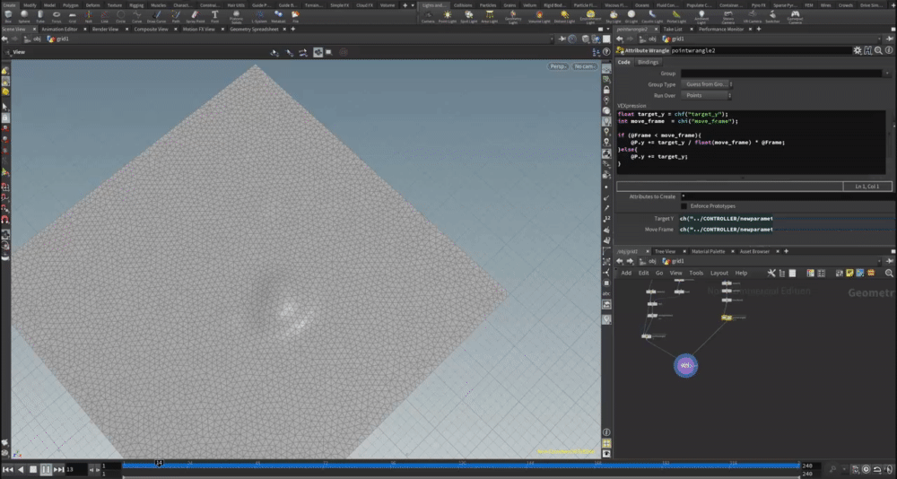
Houdini
Houdiniに触れました．主に堀川淳一郎さんの書籍『Algorithmic Design with Houdini』とYoutubeチャンネルのチュートリアルを真似ながら学習．まだ全然マスターできていませんが，ジオメトリの要素にアトリビュートを持たせて受け渡す仕組みと，ソルバーを書いて反復処理を実現するという考え方をビジュアル言語に搭載しているのが素晴らしいです．どこかで研究にも活かしたいです．
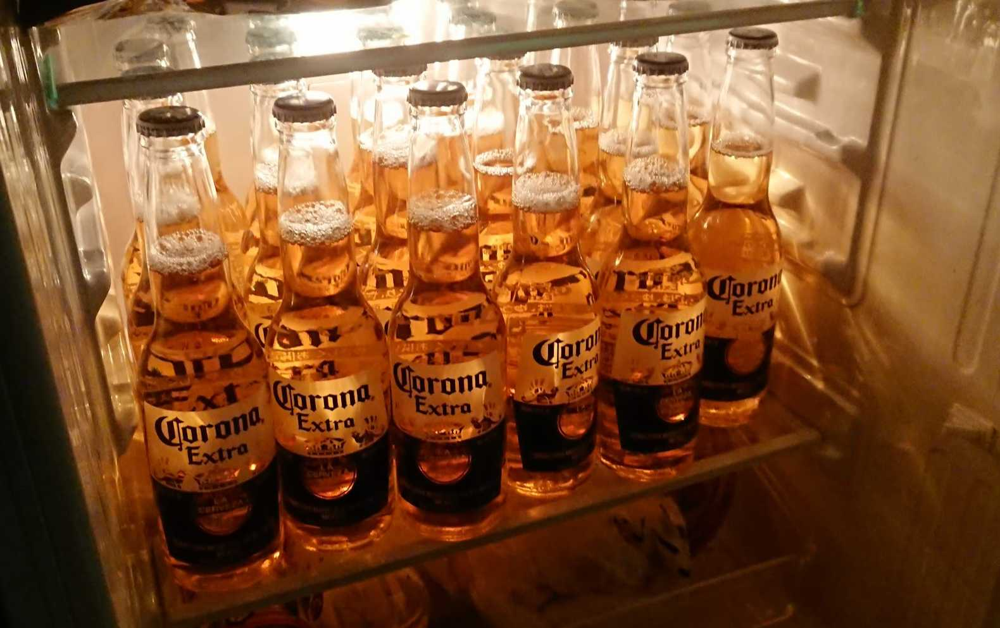
コロナ・エキストラを応援しています
2020年2月下旬，新型肺炎によって風評被害を受けているとかいないとかいうニュースを受けて，すぐに自宅の冷蔵庫をコロナ・エキストラで満たしました．通販で箱買いしていますので買い占めではありません．3月に30本程度いただきましたが，日を重ねるごとに店舗で見かける機会が減った印象があるので，良くも悪くも売れているんじゃないかと思います．
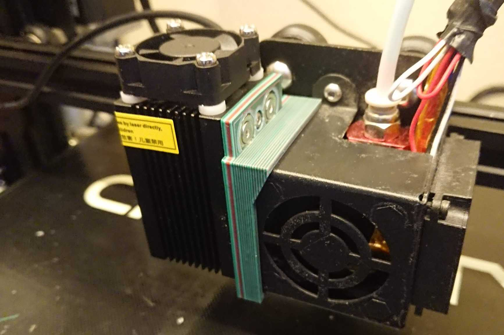
レーザーモジュール購入
3Dプリンタの基板から制御できるレーザーモジュールを買いました．12Vで駆動するので，ファン制御と同じ感覚で使えます（たぶん）．とりあえず，マウントを作ってヘッドに装着できるようにしました．なにかの研究プロジェクトで役立つことでしょう．
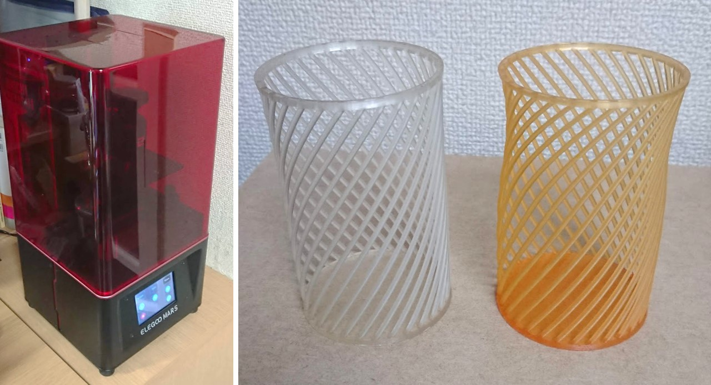
光造形3Dプリンタ買った
Elegoo Marsという機種の光造形機を買いました．特に造形精度に関しては，FDMが比にならないぐらい素晴らしいです．しかし，レジンやアルコールなどの運用はなかなか大変なのも正直なところ．使い所をしっかり見極めれば，かなり活躍してくれそうな一台です．樹脂に染料まぜたり，複雑なモデルを造形したりといろいろ遊んで試しています．
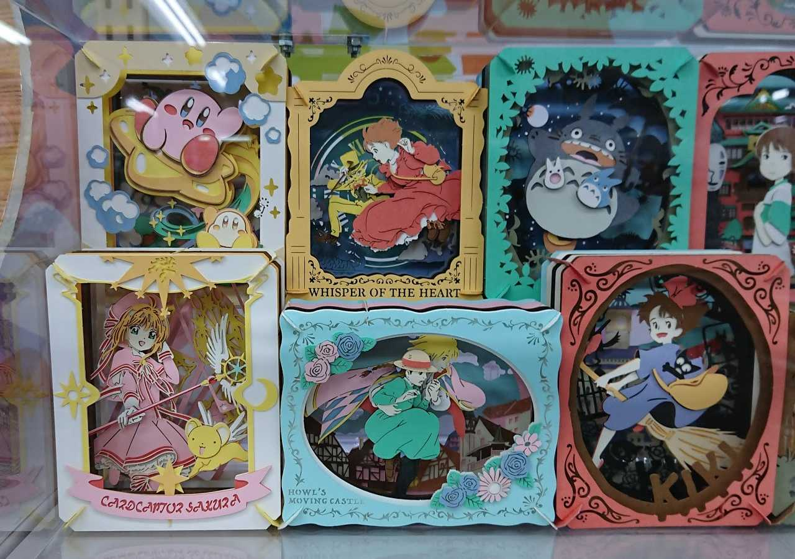
ペーパーシアター
某ホビーショップで一目惚れして買いました．カードキャプターさくらのやつを．
厚紙が複数のレイヤになっていて，組み上げると奥行き感のある作品ができあがります．素敵なのでデザインシステムとか作りたいですね．
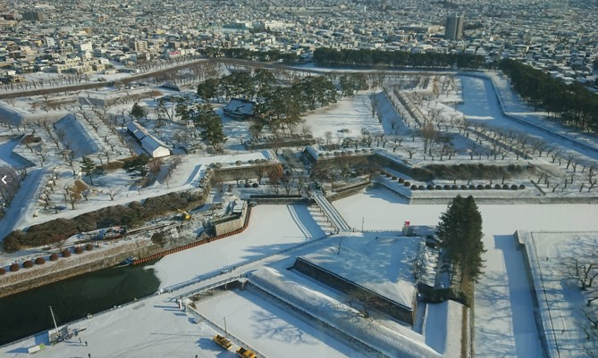
五稜郭
はこだて未来大学にお邪魔した際に，新撰組（もとい土方歳三）縁の地である五稜郭に行きました．大河ドラマ『新撰組！』の知識ぐらいしかないので，そこはかとないにわかですが，幕末を駆け抜けた壬生浪士の生き様に触れられる良い観光スポットでした．
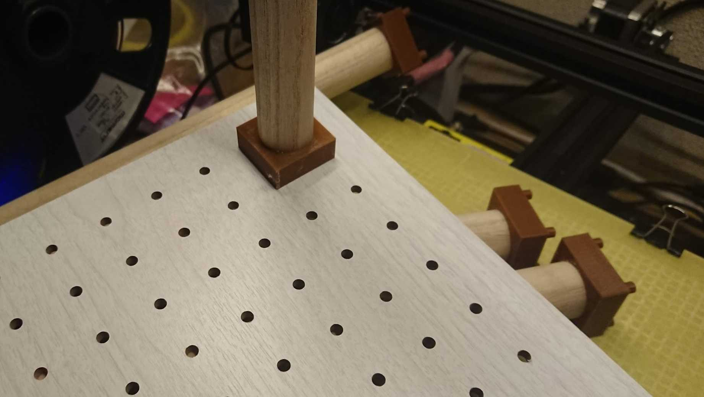
変な家具たくさん作る
3Dプリンタが意外と寸法精度よく造形してくれることを再認識し（これまでそんなに信用していなかった），ダイソーのデザインボートと木の棒を組み合わせて，いろんな家具を作ってました．机を整理するための棚を2つ3つ作ったり，本棚の高さを拡張したり．見た目は片付くのですが確実に物は増えているんですよね．
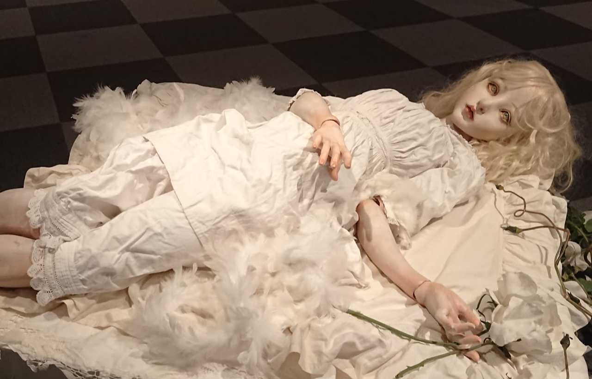
人形
人形作家，清水真理さんの個展に行きました．撮影OK，ネットへの公開OKでしたので，きっと探せばたくさん写真が出てきますが，空間演出および各コンセプトでの作品，いずれも素晴らしかったです．3Dプリンタとか使ってこういうことができないのかなぁとよく考えるのですが，こういう手芸・工芸とテクノロジーのコラボはいつも難しいですね．
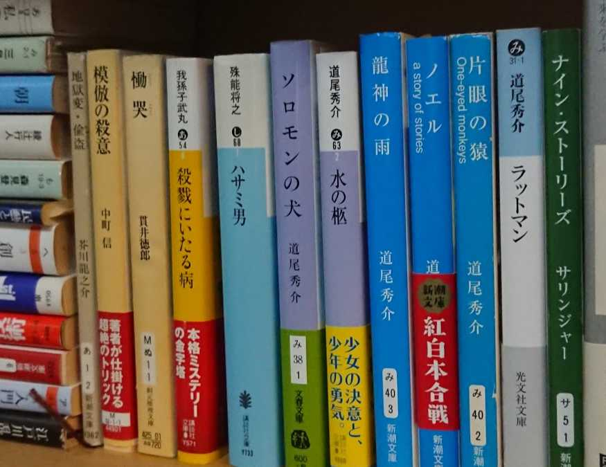
読書
年々，本を読む機会が減っているのですが，ひとまず叙述トリックもの新本格ミステリの定番を無事読了．『殺戮にいたる病』，『慟哭』，『ハサミ男』など．いずれも甲乙つけがたい素晴らしい構成です．あとは『いけない』をきっかけとして，道尾秀介さんの作品をよく読みました．暗い雰囲気の中にどこか漂う爽やかさと綿密に張られた伏線とその回収が素敵です．積んでいる本をちゃんと消費したいです．
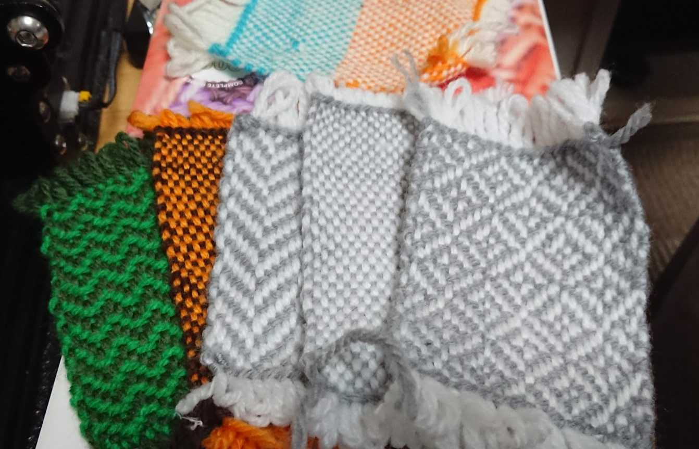
編み物
主に研究のために，ひたすら編み物をしました．ダイソーにある毛糸をほぼ全種類買ったんじゃないか，ぐらいに．あまり研究成果にはつながっていないので意味のない娯楽になってしまいましたが，これはこれで良い経験になったんじゃないかなぁ，と．Youtubeあたりで見られる産業革命の資料映像，おすすめです．
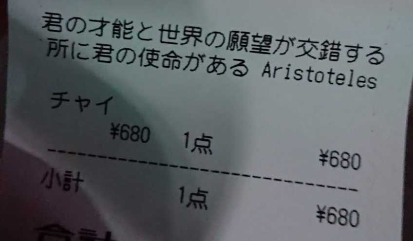
アリストテレスかく語りき
「君の才能と世界の願望が交錯する所に君の使命がある」との名言が印刷されたレシートを出す喫茶店．つまり，才能がないか世界の願望と交錯しない場合，そこに使命はない，ということです．
それでは，健康に気をつけて，来年度も頑張らずに済むように頑張ります．以上．